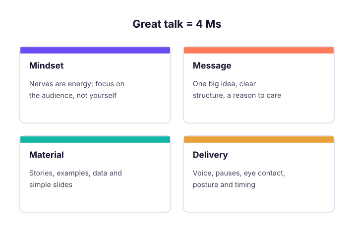

Public Speaking Complete Guide: Confidence, Structure, Storytelling, Delivery, Slides, Meetings, Interviews and Video
A practical guide to speaking with confidence at work and on stage. Manage nerves, structure any talk with proven frameworks, tell stories with data, design clear slides, master voice, pace and body language, handle Q&A and tough questions, speak in meetings, interviews and stand-ups, present on video and in hybrid rooms, and practise with AI tools, with a 30-day plan and a capstone talk.
- Manage speaking anxiety with preparation, breathing and reframing techniques
- Structure talks and answers with frameworks such as PREP, STAR, What-So What-Now What and the pyramid principle
- Tell stories and present data so audiences remember and act
- Deliver with a clear voice, purposeful pauses, eye contact and confident body language, in person and on video
- Handle Q&A, difficult questions and high-stakes moments like interviews and leadership updates
Why speaking skills decide careers
Product managers present roadmaps, analysts explain numbers, engineers demo work, and every interview is a speaking test. People who communicate clearly get trusted with bigger problems. The good news: speaking is a skill, not a talent, and it improves quickly with structure and practice.

Managing nerves
| Technique | How |
|---|---|
| Prepare the first 60 seconds word-perfect | The opening is when nerves peak; a rehearsed start carries you |
| Box breathing | Breathe in 4 s, hold 4 s, out 4 s, hold 4 s; repeat four times before you speak |
| Reframe | "I'm excited" instead of "I'm nervous": the body feels the same |
| Audience focus | Ask "what do they need?" instead of "how do I look?" |
| Rehearse aloud | Three full out-loud rehearsals beat ten silent read-throughs |
| Arrive early | Test the room, mic, screen share and clicker; meet a few people first |
| Friendly faces | Speak to a few engaged people in different parts of the room |
Structure: frameworks that always work
| Framework | Use for | Shape |
|---|---|---|
| PREP | Opinions, quick answers in meetings | Point → Reason → Example → Point |
| STAR | Interview stories | Situation → Task → Action → Result (with numbers) |
| What? So what? Now what? | Updates and reviews | Facts → why they matter → next steps |
| Problem → Solution → Benefit | Pitches and proposals | Pain → your idea → value |
| Pyramid principle | Leadership updates, written and spoken | Answer first → 3 supporting points → details |
| Past → Present → Future | Strategy and roadmap talks | Where we were → where we are → where we're going |
def prep(point, reason, example):
return f"My view: {point}\nWhy: {reason}\nFor example: {example}\nSo: {point}"
print(prep("we should launch the referral feature before Diwali",
"festive weeks bring 40% of our yearly new users, and referrals convert twice as well as ads",
"last year's 'invite a friend' test lifted sign-ups by 18% in two weeks"))My view: we should launch the referral feature before Diwali Why: festive weeks bring 40% of our yearly new users, and referrals convert twice as well as ads For example: last year's 'invite a friend' test lifted sign-ups by 18% in two weeks So: we should launch the referral feature before Diwali
Openings that grab attention: a surprising number, a short story, a question to the room, a bold claim, or a problem the audience feels. Closings that stick: repeat the one big idea, give a clear call to action, and end on a strong line rather than "that's all, thank you".
Storytelling
A simple story arc: context (who, where) → conflict (what went wrong or was at stake) → turning point (what you did or learned) → resolution (result, with numbers) → lesson (why it matters to them).
Tips: one main character, concrete details ("a Tuesday night, 2 am, the payment dashboard went red"), real dialogue, and a lesson tied to the audience's goal.
Presenting data
- Lead with the insight, not the chart: "Repeat orders fell 12% after the price change."
- One message per slide; make the title the takeaway sentence.
- Highlight the one bar or line that matters; grey out the rest.
- Translate numbers into meaning: "₹2.4 crore a year, about the cost of 10 engineers."
- Round sensibly and compare to something familiar.
before, after, customers, aov = 0.38, 0.33, 120_000, 1800
lost_orders = (before - after) * customers
print(f"Repeat rate {before:.0%} -> {after:.0%}: about {lost_orders:,.0f} fewer repeat orders, ≈ ₹{lost_orders * aov / 1e7:.2f} crore in revenue")Repeat rate 38% -> 33%: about 6,000 fewer repeat orders, ≈ ₹1.08 crore in revenue
Slides that help, not hurt
| Do | Avoid |
|---|---|
| Headline that states the takeaway | Titles like "Q3 data" |
| One idea per slide, big visuals | Walls of text you then read aloud |
| 24pt+ text, high contrast | Tiny tables, 8 colours per chart |
| Speaker notes for you | Notes on the slide for the audience |
| A backup appendix for detail | Putting every detail in the main flow |
Tools: Google Slides, PowerPoint (Designer and Copilot), Canva, Pitch, Gamma; use AI for a first draft, then cut ruthlessly.
Delivery: voice and body
| Element | Practice |
|---|---|
| Pace | About 130–150 words per minute; slow down for key points |
| Pauses | Pause 2 seconds after an important line and before answering questions |
| Volume and variety | Project to the back row; vary pitch to avoid a monotone |
| Fillers | Replace "um", "basically", "like" with a silent pause |
| Eye contact | One thought per person, 3–5 seconds each |
| Posture and hands | Feet grounded, open gestures between waist and shoulders |
| Movement | Move with purpose (to a new point), then stand still |
script_words, minutes = 1150, 8
wpm = script_words / minutes
print(f"{wpm:.0f} words per minute ->", "good pace" if 120 <= wpm <= 160 else "too fast: cut content or slow down" if wpm > 160 else "a little slow: tighten the script")144 words per minute -> good pace
Q&A and difficult questions
- Listen fully, pause, and repeat or rephrase the question for the room.
- Answer briefly (PREP), then check: "Does that answer it?"
- Don't know? Say so, and commit to follow up by a date.
- Hostile question? Acknowledge the concern, bridge to facts, stay calm and specific.
- Off-topic or long questions? Offer to take it offline.
- Seed the first question or prepare an "a question I often get is…" if the room is quiet.
Speaking at work
| Situation | Approach |
|---|---|
| Stand-up | Yesterday / today / blockers in under 60 seconds |
| Leadership update | Bottom line first, then 3 points, risks and the decision you need |
| Product demo | Start with the user problem, show the "aha" moment early, keep a backup video |
| Disagreeing in a meeting | "I see it differently because…", then data and a proposal |
| Interviews | STAR stories with numbers; pause to think; structure out loud |
| Client calls | Agenda upfront, check understanding, summarise next steps in writing |
Video, online and hybrid
- Camera at eye level, face lit from the front, clean background, a decent USB or lavalier mic.
- Look at the camera for key points; keep slides simple for small screens.
- Turn on captions; share only the window you need; close notifications.
- For hybrid rooms, involve remote people first in Q&A and repeat in-room questions.
- For recorded content (YouTube, LinkedIn), script the hook and first line, then speak conversationally.
Practise with AI
| Tool | Use |
|---|---|
| PowerPoint Speaker Coach / Presenter Coach | Feedback on pace, fillers and reading slides |
| Yoodli | AI speech coaching on recordings and mock interviews |
| Claude / ChatGPT voice mode | Rehearse Q&A: ask it to play a sceptical stakeholder or interviewer |
| Your phone camera | Record, watch once with sound off (body) and once without video (voice) |
| Toastmasters clubs | Regular practice with feedback in most Indian cities and online |
A 30-day plan
plan = {"Week 1": "Record a 2-minute self-introduction daily; remove one filler habit",
"Week 2": "Use PREP for every opinion in meetings; tell one story a day to a friend",
"Week 3": "Build a 5-minute talk with the pyramid principle and 6 slides; rehearse 3 times",
"Week 4": "Deliver it to a small group or a Toastmasters club; collect feedback; give it again"}
for w, t in plan.items(): print(f"{w}: {t}")Week 1: Record a 2-minute self-introduction daily; remove one filler habit Week 2: Use PREP for every opinion in meetings; tell one story a day to a friend Week 3: Build a 5-minute talk with the pyramid principle and 6 slides; rehearse 3 times Week 4: Deliver it to a small group or a Toastmasters club; collect feedback; give it again
Capstone: a 7-minute talk
Choose a topic from your work ("How we cut checkout drop-off by 15%"): opening hook, one big idea, three points with a story and one data slide, a clear call to action, rehearsed three times with a timer, recorded, reviewed against the delivery table, and delivered to an audience with Q&A.
Summary
- Manage nerves with preparation, breathing, reframing and audience focus.
- Structure every talk or answer: PREP, STAR, pyramid principle, What-So what-Now what.
- Stories and clear data make messages memorable; slides should support, not replace, you.
- Delivery is pace, pauses, voice, eye contact and posture; practise aloud and on video.
- Handle Q&A calmly: listen, rephrase, answer briefly, follow up when you don't know.
1. Which framework suits a quick opinion in a meeting?
2. What should a slide title say?
3. What is a good replacement for filler words like "um"?
4. Someone asks a question you cannot answer. What do you do?
5. Which order fits a leadership update?
6. About what speaking pace is comfortable for most audiences?
Write a 2-minute "tell me about yourself" using Past → Present → Future and one STAR story with a number. Record it, count your words per minute and filler words, then re-record with three improvements.
Show solution
A strong answer: one line on background, current role and a quantified achievement (STAR), why the next role fits, under 2 minutes at 130–150 wpm, with pauses replacing fillers and eye contact with the camera.
Q: Tell me about yourself. Past (relevant background) → present (current role and one quantified win) → future (why this role), in under two minutes.
Q: Describe a time you had to present to senior leaders. STAR: the situation and stakes, how you structured the message answer-first, how you handled questions, and the decision or result.
Q: How do you explain a technical idea to a non-technical audience? Start with why it matters to them, use an analogy, avoid jargon, show one example, and check understanding.
Q: How do you handle disagreement in a meeting? Acknowledge the other view, explain your reasoning with data, propose a way to test or decide, and agree next steps.
Q: How do you prepare for an important presentation? Know the audience and the decision needed, build an answer-first storyline, design simple slides, rehearse aloud with a timer, prepare likely questions and test the setup.
Learn more
Practise more online
Free, trusted places to test yourself on this topic. Links open the original site in a new tab.